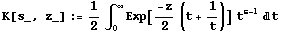
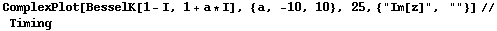

![[Graphics:HTMLFiles/index_9.gif]](HTMLFiles/index_9.gif)
The ``baby'' K-Bessel function
June 30, 2005
Definition
The ``baby'' K-Bessel function is defined as
for Re(z)>0 (Terras1, 136).

Terras also calls it the modified Bessel function of the third kind.
Plots

References
Terras, Audrey. Harmonic Analysis on Symmetric Spaces and Applications,Vols.I,II,Springer-Verlag,N.Y.,1985,1988.
| Created by Mathematica (August 3, 2005) |